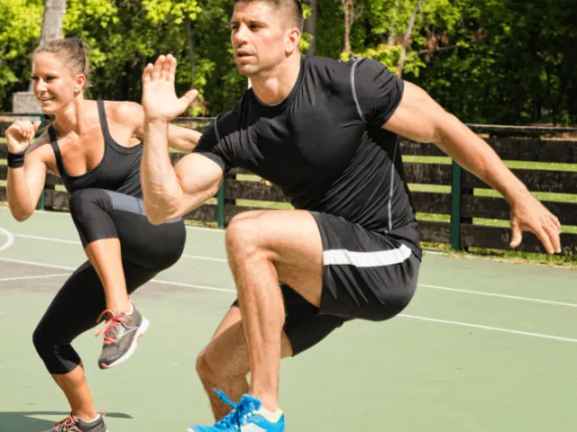
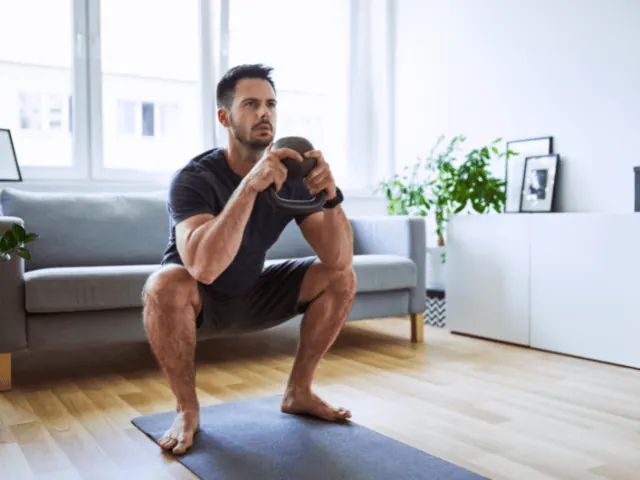
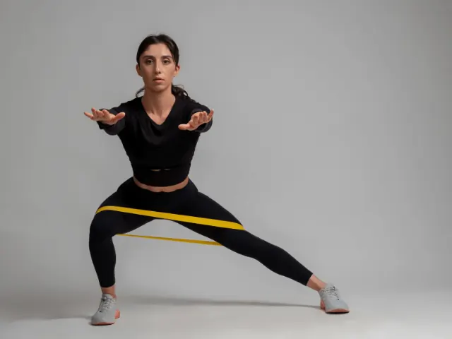
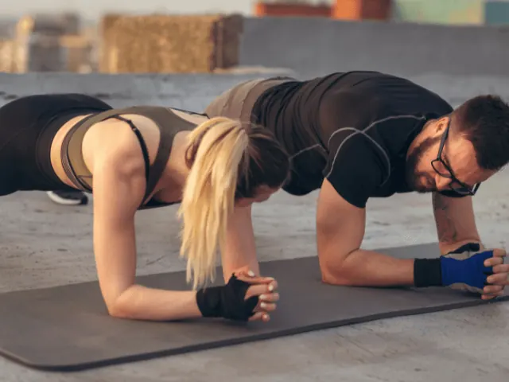

Partnerbijdrage
7x De Beste Warming-Up Oefeningen
Gepubliceerd op 8 december 2022, bijgewerkt op 20 februari 2024

Warming up is zeer belangrijk
Als je wilt gaan sporten dan kun je dit niet meteen doen met een niet opgewarmd lichaam met koude spieren. Warm eerst op en ga dan pas vol gas! Opwarmen is een belangrijke stap om te presteren voordat je gaat trainen, en zowel bij zwemmen, als bij fitness, wielrennen en hardlopen is dit een van de belangrijkste dingen die je vooraf moet doen. Het vermindert uiteraard het risico op blessures en bereidt je spieren voor op een zware inspanning. Om je op het juiste spoor te krijgen, hebben we de beste oefeningen uitgezocht die je voor elke training kunt doen in een sportschool, bij crossfit, wanneer je gaat hardlopen, voetballen of een andere sport die je kan beoefenen in Nijmegen.
Opwarmoefeningen
De warming-up oefening is de ideale bondgenoot om je lichaam voor te bereiden op de intensieve activiteiten die zullen volgen. Het kan ook gunstig zijn voor het lichaam, want het bevordert de circulatie van zuurstof en bloed om de spieren meer flexibiliteit te bieden tijdens een intensievere oefening. Het vergemakkelijkt beweging en brengt grote flexibiliteit aan het lichaam. Het maakt beweging meer van de gewrichten natuurlijker. Het beperkt blessures, omdat het de spieren laat ontspannen. Het helpt het lichaam gemakkelijker te bewegen en vermindert stijfheid en pijn. Volgens studies uitgevoerd door professionals verbetert het opwarmen van de spieren de prestaties gunstig.
Wat is stretchen?
Stretchen of statisch rekken helpt bij het losmaken van bindweefsel en de spieren. Het wordt meestal gedaan na de training. Het bestaat uit het effectief verlichten van de spierspanning. Om dit te doen, raden we je aan jezelf uit te rekken tot je een lichte trek voelt. Blijf dan 20 tot 90 seconden stil. Uiteraard heb je de mogelijkheid om de oefeningen te variëren: adductoren rekken, triceps rekken, hamstring rekken, etc. Door ze te herhalen, geef je jouw gewrichten extra flexibiliteit en mobiliteit. Evenzo stellen ze je in staat om de amplitude van jouw bewegingen te bevorderen.
Dynamische warming-up: wat is het?
Voordat je met de intensieve oefeningen begint moet je beginnen met de warming-up van de krachttraining. In tegenstelling tot de bovengenoemde stretch, moet de dynamische warming-up aan het begin van jouw training worden uitgevoerd. Het maakt het mogelijk om je temperatuur te verhogen dankzij de bewegingen die de spieren zullen aanspreken.
Voor de beste resultaten wordt aanbevolen dat je oefeningen doet die vergelijkbaar zijn met de bewegingen die je later zult uitvoeren. Je hebt de mogelijkheid om lichte bewegingen of juist meer geavanceerde stretching uit te voeren, afhankelijk van je gevoel. Je kunt ook met je armen zwaaien, armcirkels of hoge kniebuigingen proberen.
Weet in ieder geval dat de dynamische warming-up bestaat uit het zachtjes trainen van je spieren. Het helpt ook bij het ontwikkelen van jouw coördinatie, mobiliteit en kracht.

Overzicht van de verschillende soorten opwarmingsoefeningen
Voor het uitvoeren van een sportoefening thuis is niet per se de aanwezigheid van een professionele coach nodig. Als je echter het maximale uit uw training wilt halen, zoals hierboven vermeld, moet je wel beginnen met opwarmingsoefeningen. Het is aan jou om te kiezen of je specifieke oefeningen wilt doen, of je wilt houden aan de bewegingen die we hieronder voorstellen.
1 – Squats
Dit soort oefeningen traint voornamelijk de spieren van het onderlichaam, namelijk de bilspieren, hamstrings of quadriceps. Voor een beginner raden we aan om de eerste bewegingen uit te voeren door halverwege te stoppen, dus niet te diep gaan. Je kunt de intensiteit van de oefeningen geleidelijk verhogen. Je hebt ook de mogelijkheid om gewichten te gebruiken tijdens deze kleine squat-sessie.
Om dit te doen, volgen hier de verschillende stappen die je moet volgen:
-Blijf rechtop staan terwijl je je voeten op heupbreedte uit elkaar houdt.
-Richt je tenen zachtjes naar de zijkanten of naar voren.
-Span je buik aan en buig je knieën.
-Laat de billen voorzichtig zakken totdat de dijen evenwijdig aan de vloer zijn. Aarzel niet om naar jezelf in een spiegel te kijken om de juiste houding aan te nemen.
-Zorg ervoor dat je tenen en knieën in dezelfde richting wijzen. Deze laatste mogen de tenen niet overschrijden.
-Pas op dat je de rug niet kromt of rond maakt.
-Om goed op te staan hoef je alleen maar op de hielen omhoog te duwen.
-Kom langzaam weer omhoog terwijl je je billen stevig samenknijpt en uitademt.
-Keer terug naar een rechtopstaande positie.
-Doe ongeveer 1-3 sets van 12-15 herhalingen.

2 – Side lunges
Side lunges hebben alles te maken met het vormgeven en versterken van de benen, heupen en billen. Ze behoren ook tot de gemakkelijkste oefeningen om uit te voeren. Inderdaad, het is voldoende om een paar bewegingen na elkaar te doen. Voor beginners adviseren wij je slechts tot de helft te gaan. Het is aan jou om de moeilijkheidsgraad te verhogen op basis van je niveau.
Houd je daarbij gerust aan de volgende stappen:
-Sta rechtop en zorg ervoor dat je rug recht is
-Spreid je voeten iets uit elkaar totdat ze op heupbreedte uit elkaar staan
-Wijs de tenen naar buiten
-Als je van de rechtervoet naar de rechterkant kruist, zorg er dan voor dat je je linkervoet als ondersteuning gebruikt
-Hurk naar beneden, buig dan het rechterbeen terwijl je het linkerbeen recht houdt
-Controleer of de rechterknie ruim boven de tenen zit.
-Probeer zo laag mogelijk naar beneden te gaan, voordat je de heupen optilt om de startpositie te vinden, adem uit
-Voer een soortgelijke beweging uit aan de andere kant
-Voer één tot drie sets van 8 tot 15 herhalingen uit

3 – Front lunges
We hebben het hier over een zeer bekende beenoefening omdat het de spieropbouw van de billen en dijen bevordert. Dus begin met staan en spreid dan je benen. Plaats je handen op de taille en plaats je rug recht. Zet dan een grote stap voorwaarts. Zodra deze stap is voltooid, kun je de benen buigen totdat je een hoek van 90 ° krijgt. Ook moeten de benen evenwijdig aan de grond zijn. Om terug te keren naar de beginpositie leun je er lichtjes op. Het enige wat je hoeft te doen is dezelfde oefening herhalen. Doe 2 of sets van 10 tot 15 herhalingen.
4 – Planken
Zoals eerder vermeld is een warming-up voor het sporten belangrijk. Als je op zoek bent naar een oefening voor het bovenlichaam, raden we je zeker aan de plank te doen. Dit verhoogt niet alleen de flexibiliteit, maar stimuleert ook de buikspieren en de borstspieren. Het helpt ook de houding, coördinatie en je balans te verbeteren. Het is ook mogelijk om de bewegingen te diversifiëren als je eenmaal goed opgewarmd bent.
Voor de uitvoering ervan:
-Begin door in een push-up positie te komen. Kies als beginner voor een plank op de knieën, en voor de meer gevorderden probeer een plank op de onderarmen. Voor een gemiddeld niveau probeer het allebei eens en kijk waar je beter in bent.
-Tenen en handpalmen moeten stevig op de grond worden geplant. Zorg ervoor dat je je kernspieren aanspant en houd je rug recht. Houd je hoofd ontspannen en recht, zonder het op de grond te laten zakken.
-Houd deze positie 30 seconden tot 1 minuut vast.
5 – Push ups
Voordat je aan een zware training moet je ook even een push up set doen. Ben je een nieuweling? Dan kun je gewoon een push-up op je knieën doen.
-Ga recht staan en zorg ervoor dat je je handen op schouderbreedte uit elkaar spreidt. Breng je voeten achter je samen en houd je buikspieren aangespannen en je rug plat.
-Breng het lichaam naar de grond, zonder dat de rug en romp doorhangen.
-Je moet je armen alleen duwen als je kin of borst bijna de grond raakt. Aarzel niet om jouw ellebogen goed gebogen te houden om hyperextensie te beperken.
-Voer 1-3 sets van 8-12 herhalingen uit.

6 – Joggen met knie optillen
Joggenen ondertussen je knieën optillen is de ideale bondgenoot om de bloedsomloop direct te bevorderen en dit goed rond te pompen. Tijdens deze sessie raden we je aan om elk segment 30 tot 60 seconden uit te voeren. Het is echter mogelijk om de intensiteit van de oefening te verminderen. Ja maar hoe ? Door het stapvoets te doen.
-Wandel in een rustig tempo.
-Voer het tempo op.
-Ga joggen in een langzaam tempo
-Ren na ongeveer een minuut terwijl je de in knieën minder dan 30 seconden naar jouw borst brengt.
-Vorige ritme hervatten
7 – Triceps warming-up
Om de triceps te stimuleren zijn hier de stappen die niet over het hoofd mogen worden gezien:
-Zorg ervoor dat je je armen naar de zijkanten uitstrekt, evenwijdig aan de vloer
-Houd de handpalmen naar beneden en de armen gestrekt
-Achterwaartse rotaties uitvoeren
-Maak na 20 tot 30 seconden voorwaartse cirkels met je armen
-Kijk na 20-30 seconden met de handpalmen naar voren en probeer dan met de armen heen en weer te klappen
-Kijk na 20-30 seconden met de handpalmen naar achteren, omhoog en omlaag
-Voer 1-3 sets uit
Hoe zit het met de duur van de warming-up?
De warming-up blijft echt nog steeds een essentiële stap in een trainingsprogramma. Bovendien heb je hierbij de mogelijkheid om de bewegingen naar eigen behoefte te variëren, of je nu rug- of bilspieroefeningen wilt doen. Over het algemeen kan de gemiddelde duur van een warming-up variëren van 5 tot 10 minuten, afhankelijk van de moeilijkheidsgraad van de training. Zoals hierboven vermeld beperkt het opwarmen van de spieren het risico op blessures en verbetert het tegelijkertijd de prestaties en flexibiliteit.